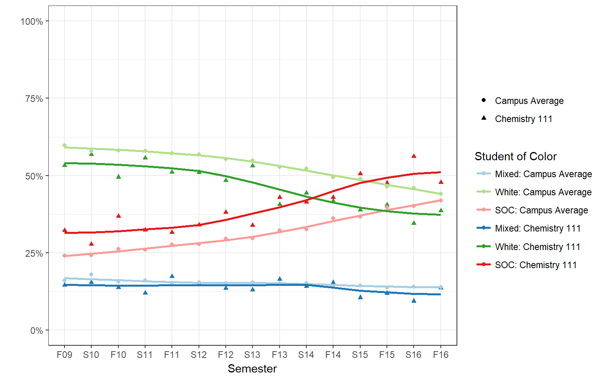
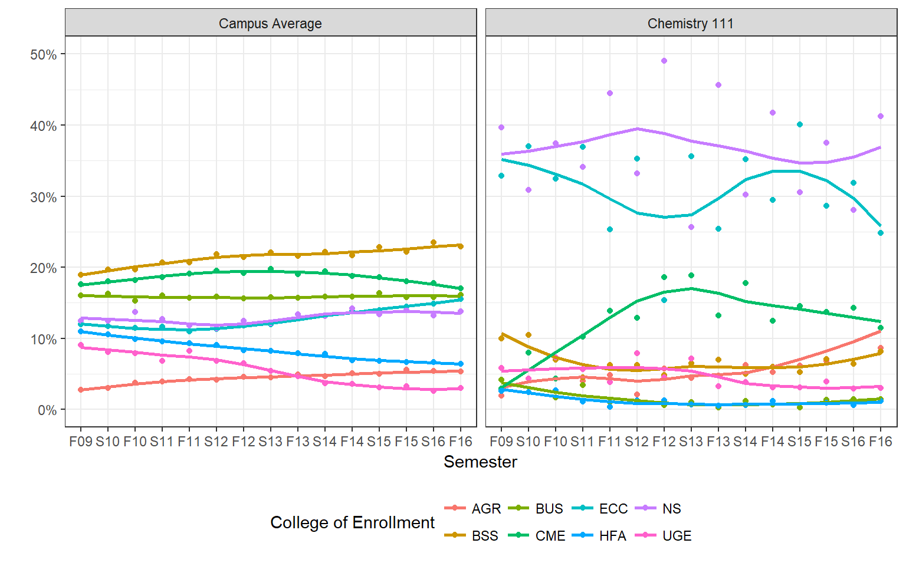

Historical Trends in Students taking Chem 111
This section analyses the trends in characteristics of the student group who is taking Chemistry 111, and compares them to the campus level averages.
We consider data from Fall 2009 - Fall 2016, for all sections of Chemistry 111. Students withdrawing or receiving an incomplete (W/I) are excluded from this analysis. A repeatable grade is defined as a student receiving a D, D+, or F grades, or an unexcused withdrawal WU.
Course Characteristics
First we examine the historical trends of aggregated course level characteristic such as enrollment and DFW rate. You can click on the sidebar to the right to navigate through the table of contents for this report.
Enrollment
Enrollment in Chemistry 111 has steadily increased since 2009, with Fall semester seeing about 100 more students compared to Spring. You can hover your mouse pointer over the points on the plot to see the actual enrollment numbers. Mousing over the trend line gives you an interpolated or estimated enrollment number, which should be disregarded in this report.
Class size
Fall class sizes have remained relatively constant between 140-160 since 2009. A third section in both Fall and Spring were added in AY 13-14.
GPA
The average class-level GPA across years is 1.91, with standard deviation 0.27. Spring and Fall semesters have different patterns of oscillating increase and decrease of class-level GPA, but there is no statistical linear trend across terms nor a difference in average GPA between Fall and Spring.
For the next two plots, the size of the dot represents the size of the class. This is an important characteristic since a DFW rate of 30% for a class of 100 is larger than for a class half that size.
DFW rate
As expected we see a similar pattern, slightly different between Fall and Spring, for the number and % of student receiving a repeatable grade (D/F/WU).
Student Characteristics
This section examines trends about student level characteristics over time. Where available, campus level averages are presented for comparison purposes.
Demographics +
Gender
Campus has a seen a steady rate of slightly higher than 50% female students for the past 7 years. Female enrollment in Chem111 has been historically much lower than the campus average, with Spring semester consistently seeing a higher proportion of males.
Age
The black horizontal line represents the median age of all students across campus at the time of enrollment. From 2009 to about 2013 there was an increase in the average age of students at enrollment campus wide, which has seemed to have leveled off.
Students taking Chemistry tend to be slightly younger than the average campus age, and those taking Chemistry in the fall are on average younger than those taking chemistry in the Spring. Recall this is age at admission, not the age when the student is taking Chem 111.
Where the student comes from
The patterns of trend for the shifting demographics for where the students come from and enroll in Chemistry is similar to the overall campus trends. We see a decline in the proportion of students coming from Butte County (gold line), our general service area (red-orange line), and from the Rest of California (purple line) in general. There is steep increase in the enrollment from students in the Los Angeles area since around Fall 2011 (green line). By the F16 23% of the campus population is from the LA area, whereas these students make up 31% of Chemistry 111 classes in F16.

Race / Ethnicity
For completeness sake, we first examine the trends for all recorded race/ethnicity (IPEDS) classifications. The most notable trends is the decrease in White students from being the majority at 59.6% in Fall 09 down to 44.1% by Fall 2016, with an equivalent increase in the proportion of students who identify as Hispanic/Latino increasing from 16.4% in Fall 2009 to 32.5% by Fall 2016.
In 2009, the proportion of White and Hispanic/Latino students taking Chemistry was similar to the campus averages (53.2% White and 17.7% Hispanic/Latino). However the proportion of Hispanic/Latino students rose to match that of White students taking Chemistry 111 in Fall 2015: 40.5% white and 40.1% Hispanic/Latino. This is a more equal balance compared to the campus average in Fall 2016 which is 44.1% White and 32.5% Hispanic/Latino.
Since eight race/ethnic categories is too many to compare, especially when six of those categories make up less than 80% of the population, two additional groupings of categories are commonly used: One to identify underrepresented minority students, and the other to identify students of color. The historical trends for both of these are looked at next, but essentially show the same information as the plot just discussed.
URM
The definition used in this report follows the campus definition for an underrepresented minority student and is as follows:
- Non-URM: Asian, NHOPI, White
- URM: Black, HL
- Unknown: Mult, Unk
Since 2009, Chemistry 111 has had a higher proportion of URM students enrolled compared to the campus average. This gap has widened since around Fall 2012 or 2013, the proportion of URM taking in Chem 111 is increasing faster than the campus average.
SOC
The definition used in this report for Student of Color is as follows:
- SOC: American Indian/Alaskan Native, Asian, Black, Hispanic/Latino,
- Non-SOC: White
- Multiple/Mixed: Multiple, Unknown
A very similar trend is seen using the classification that lumps all students non of white or of mixed or unknown ethnicity together. Using this metric, the proportion of students of color surpassed the proportion of white students in Chemistry 111 by Spring 2014. By Fall 2016 students taking Chemistry 111 are 47.7% students of color and 38.6% White

First Generation
There has been a steady and statistically significant increase in the proportion of first generation students attending Chico State, and enrolling in Chemistry 111 over the past seven years. In this case, the Fall Chemistry student body is no different than the average Chico State student, but since about 2013 the proportion of first generation students in the Spring cohort has been increasing.
Citizenship
The proportion of non-citizens enrolled campus-wide levels off at about 5%, but there has been an increase in non-citizens enrolling in Chem 111 since around 2011. The three sections of Chem 111 in Fall 16 had 5%, 8% and 11% non-citizens enrolled in their classes.
Disabled Student Services
Students who are receiving services from DSS has varied over the past 7 years, but generally stayed below 5%, which is what the campus average has been at since around Spring 2013.
EOP Status
The proportion of students who are participating in the EOP program while enrolled in Chem 111 have historically been higher than the campus level average. There is indication that while the campus average remains constant at about 7%, both Fall and Spring terms for Chemistry have declined to 3-4% by 2016. Between 2011 and 2014 the average proportion of students in EOP was higher in Spring than it was in the Fall, nearly double in some cases (6% vs 12%).
REACH
Data on the reach program was was either not contributing data to the SIS system or not in place prior to Fall 2013. Campus level averages for the Reach program were also not available. Similar to EOP, the proportion of students in the REACH program are higher in Spring compared to Fall. However it is my opinion that this data is not reliable due to some discrepancies found while working with Erik.
Academic Characteristics +
These next set of characteristics examined are considered to be academic characteristics, features that the student has direct control over, can change each semester, and are inherently part of the undergraduate process not the student themselves.
College
Chemistry 111 is not a required class for all majors across campus. Most Chemistry students come from the College of Natural Sciences (NS), which is somewhat obvious, but the second most common college is Engineering, Computer Science and Construction Management. There was an steady increase in the proportion of students coming from Communication and Education (CME), which seemed to level off around 2013.
This is unsurprisingly different than the average campus profile, which is pretty constant across the past seven years where the college of Behavioral and Social Sciences (BSS) is the largest, followed by CME and Business (BUS). 
Student Level
Since this is a 100-level course, the majority of students are Freshman, however nearly a quarter are Sophomores and another quarter higher. The trend is pretty constant across years, but spring semesters tend to see a lower proportion of Freshman compared to the Fall.
Current units in progress
There is quite a range of average unit load for the semester that the student takes Chemistry 111. The Fall cohort is pretty constant, a little below 12.5 units, whereas Spring is more variable and generally a little higher. The obvious exception was during Spring 13, and one class in Spring 12 had lower than typical class load.
Term level GPA
This was a last minute addition that I thought would be interesting to look at, but I didnt have the campus level term GPA readily available. So the campus level GPA for the past five years was obtained in aggregate from the Institutional Research Reporting website.
Students taking Chemistry 111 have a much lower average GPA compared to the average Chico State student. There could be a number of reasons at play here, the least of which is that this is college dependent. If the raw data were available then a more accurate comparison would be to compare the term level GPA to the campus average - within at least the same college. Furthermore, when you are taking an average of around 15 thousand students, an average GPA change of 0.2 (F12 to S13) seems like a data mistake to me.
Tests and Benchmarks +
Admission Index
Students enrolling in Chemistry 111 tend to have a higher admissions index (high school eligibility index (HSEI)) than the average student on campus. This average is created based on all students on campus during that semester, but the HSEI measure is only created upon admission.
There was a lot of variation in the average index prior to around 2013, the campus level HSEI in Spring 10 was 3.44, up to 3.66 in Fall 10, back down to 3.26 in Spring 11, and up again to 3.60 in the Fall.
There may be a slight upward trend for both Chemistry student and the campus average, after 2014 we see class level averages for Chemistry courses that are over 3.8.
GE-Breadth Course Completion Status
Next we look at the proportion of students who have completed their General Education English (A2), Critical Thinking (A3), or Quantitative Reasoning (A4) requirements before enrolling in Chemistry 111. Since this is depending on the student taking chemistry, no campus level comparisons are appropriate here.
Less than 30% of students have any of their Area A GE requirements completed prior to taking Chemistry. This is not unexpected since Chem 111 is a freshman level course. Students who dont come in with some sort of transfer or AP credit would not have these requirements met. The patterns for English and Math track together, with critical thinking having the same trend across years but shifted down about 4-6%.
Entry Level Proficiency
Entry level Math and English proficiency are assessed at the time of admission using the ELM and EPT respectively. However students who do not pass these tests can become proficient by taking specific remedial classes. This section looks to see if students are considered Entry level Math and English proficient by the time they take Chemistry. Campus comparisons are similarly not available.
Overall more than 85% of the students taking Chemistry 111 are considered to have entry level math and English proficiency. A higher percent of the Fall cohort historically is Entry level English proficient compared to the Spring cohort.
College prep
Included in the student application data is the number of college prep units the student has taken in English, Math, and Laboratory Science. There is a large variance in the number of units, and it doesnt always seem to translate directly to the number of classes. (E.g., how can you get 2 units only of College Prep Lab Science?)
The plot below shows the average (\(\pm\) Margin of Error) number of college prep units is higher for the fall cohort compared to the spring, but there is a large amount of variation in this type of college prep across the courses. How the amount of college-prep units completed translates to actual on the ground preparedness is yet another topic that could be investigated.
Summary
Understanding the population under investigation is a necessary first step in any analysis.
This section provided information on the historical trends for students who take Chemistry 111, with a particular focus on the difference between the Fall and Spring cohorts. The demographics of the average student at Chico State are changing, and in some cases the shift is more pronounced (like the proportion of Hispanics) in the Chemistry students, or are trending right along with the rest of the campus (like the proportion of First generation students).